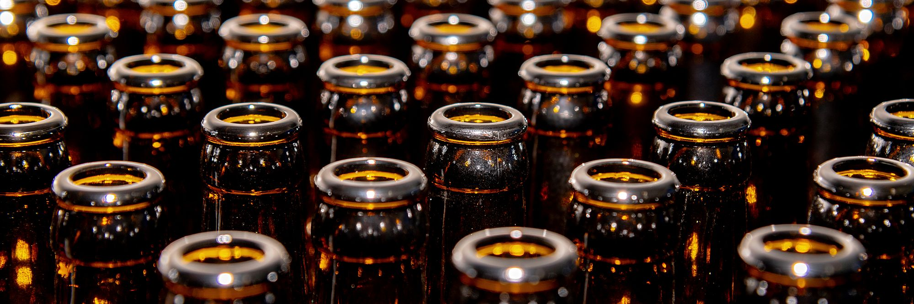
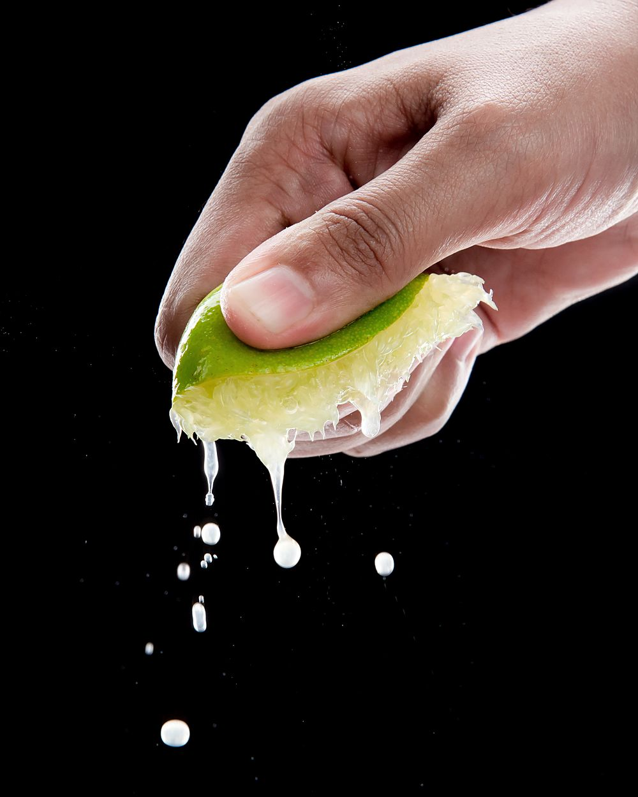
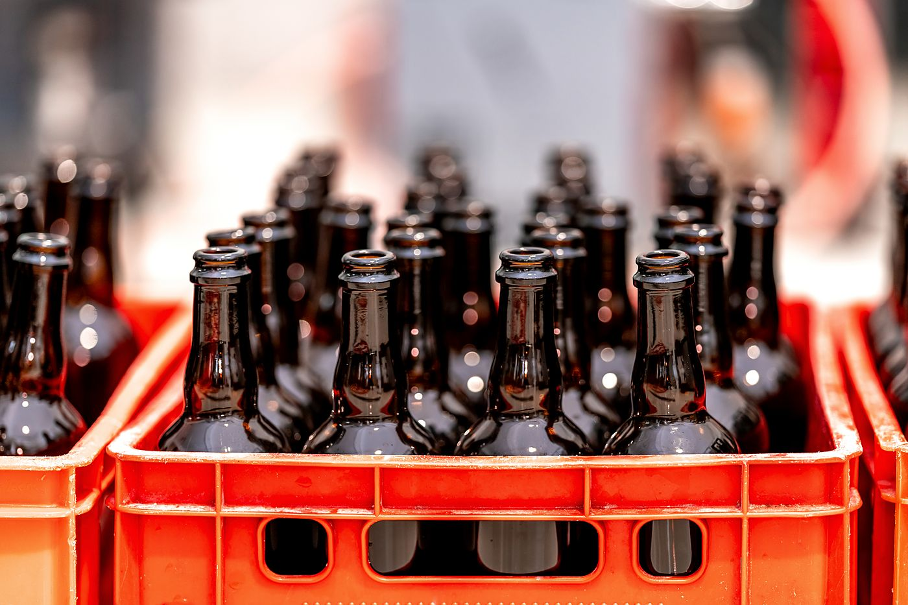

Why salt, and why so little sugar.

It started with a complaint. In December 2022 Shu Yi was making the drinks at a friend’s café in Joo Chiat, and the drink people ordered most was the lime juice, and the thing they said most was less sweet. Take the sugar out and it goes thin and mean. Leave it in and you are selling syrup. Every drinks stall on the island has solved this already, of course, with a sour plum dropped in the glass — so she started doing that, then weighing it, then wondering why nobody had bottled it.
The principle is not complicated. Salt suppresses bitterness on the tongue and, at low levels, makes sweet and sour read louder. A pinch on a slice of pineapple, plum powder on guava, sng buay in lime juice: it is the same move each time. Once the salt is doing that work, the sugar can come down a long way before a drink tastes like it is missing anything. Ours came down to 7–9 g a bottle. The number we measure it against, 26.5 g, is what an ordinary cola has in the same 250 ml.
Take the sugar out and it goes thin and mean. Leave it in and you are selling syrup.
The stall
The first Saturday stall was January 2023: three flavours, a borrowed chest freezer full of ice, and a hand-written price card. A hundred and twenty bottles went in four hours, mostly to people who tasted the calamansi and said some version of “oh — that’s the drinks-stall one”. That sentence is still the best description anyone has given it.
By August the kitchen was too small and the neighbours had opinions about the carbonation rig, so we took a 40-square-metre unit in Tai Seng and bought a second-hand two-head counter-pressure filler from a brewery that was upgrading. Runs of 300 bottles. That is one working day, start to finish, for two people, and it is still how the sodas are made: juice pressed the same morning, salt weighed to the tenth of a gram, bottles filled cold and pasteurised in a water bath so they keep three months in a fridge.
Two people, five sodas
Arif came on full time in March 2024, when the roselle arrived and the deliveries stopped fitting in one car. He runs the filler and the stockists; Shu Yi runs the recipes and the door. There is nobody else, which is why the phone number on this site is a WhatsApp and why the Saturday door sometimes opens ten minutes late.
Five is probably the right number of sodas. Four all year, one that follows the fruit. We are asked a lot about a ginger, and about a cola, and the answer to both is that other people already make good ones. Nobody else was salting a calamansi.
In order
A sour plum goes into the lime juice at a café in Joo Chiat. People stop asking for less sweet.
First Saturday stall. Three flavours, 120 bottles, four hours.
The Tai Seng unit and the two-head filler. Runs of 300 begin.
Roselle & Sea Salt joins the range. Arif comes on full time.
Watermelon, the first seasonal. Eight stockists across the island.


Bring the bottles back.
Every bottle is glass and every crown cap is steel, and both are worth more washed than recycled. Bring empties to the Saturday door or leave them with any stockist and we take 50 cents off the next one. It is not a scheme, it is arithmetic: a new bottle costs us more than that.
Nothing else in the bottle needs explaining. Fruit, water, sugar, salt. The ingredients list on the label is the whole recipe, and if you want the proportions, they are on the sodas page, one by one.